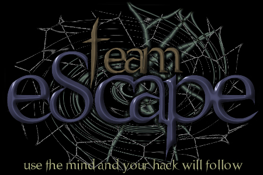

Owned by Cheitan and indigoo

Damn! You were one bitch to hack... No really, you were! I just couldn't find out where your files were... Can't you do like everyone else and put it on C:\wwwroot so that when people want to deface your site it's easy? I hate when people try to make my life difficult...
Alright, so, what should I bitch about today? I know! What about that ecological disaster with that gold mine in Romania? Alright. First off, I'd like to say that it is total shit! I mean, everyone knows they probably wont even get punished for what they did, and if they DO, well they'll get away by paying a couple millions... Pocket money. The cyanide poisoned the waters and killed all the life, including the smallest bacteria. Now, ok, they killed fish... But what about the fishermen, they loose their jobs if they can't go anywhere else. How many people do you think fish for a living? A damn lot.
The owners of the gold mine, Esmeralda Exploration (An Australian company) will probebly be found guilty for the cyanide leak. Of course, they'll still deny it. And they'll have to pay a small price compared to what they deserve. The river is deadly up to about 500-600kms downstream, and it will be dead for years to come. EE will probebly end up paying only a slight fraction of what the damage it has done will do in the future. So much for 'justice'.
I'm not an enviromentalist, but what I do care about is the number of people that will loose their jobs and become bankrupt, all because of a multi-million-dollar company that thinks it can own the world and destroy it without taking any blame.
Alright, enough bitching about that. Another thing I would like to bitch about, is Kevin Mitnik. Alright, I just want to say that I'm very happy he's free, but I'm not happy for him, I'm happy because I finally will stop hearing about him. He's a criminal that made a lot of people loose money, and he deserves prison... Unfortunatly that would have caused chaos if he was to be held guilty. What kind of bullshit was that, everyone saying that 'FREE KEVIN' crap?! Alright, he was held without a trial, and that was extremely unfair... But maybe people should have woken up and just shuttup, it's none of their business anyways... The guy deserved prison, and thats what he got, trial or no trial.
So now that he's free, I just hope I wont have to hear about him again. I dont care about Mitnik... And neither should you. Hacking a website shouldn't be criminal, but what he did WAS criminal... He sold credit card information to people, making money by selling stolen things, and not only that but the person with the credit card lost even more money than if it was just his stolen goods. Mitnik was a criminal, he deserved the years he got in prison, and now he's free. So let's stop talking about him!
Hope you enjoyed my bitching, goodbye, have a nice day!
Peace Out!
Greets out to:
msn:
- #hackers, #protocol, #southafrica, #Cz&Sk, #belgiumwing
- Visjnu, peanut, geye, kate, TheP|nkPanthe|2, m0de, DAFFY_DUCK, Ryan, Mayhem, CyRaX
webchat:
- #marijuana, #theatredesvampires, #anti
- o3, mans0n, DoberMan, tg, f1re, sirgrim
Also greets to:
- Sativa, Émilie, Steve, CarNaGe0, Mr. Nice Guy, PhaZZer, Nitro, AcidCrasher, soulfly, and everyone else that I didn't mention.
nb: No files have been deleted or overwritten. The original index.htm file has been renamed for index11.htm. Our entry was spoofed, the logs are fake, but I doubt you would want to try to stop us anyways. We're just telling you you have weak security :)